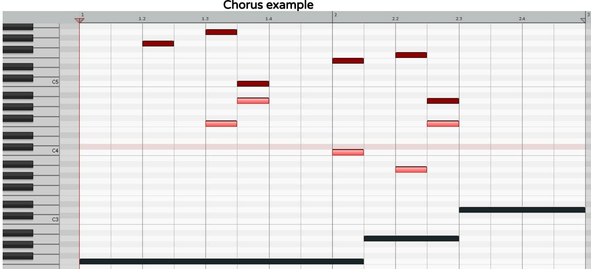

Vibes: Seven Feelings, One Formula
Scales are modes, and modes are scales.
Same thing, different name.
A scale/mode is a family of notes that sound good together.
Most western music over the last thousand years has been made using the same set of seven notes, which occur from the Pythagorean-based formula of semitones: 2 2 1 2 2 2 1.
Start on any note, then follow this formula and you’ll have the mother of all scales, Ionian, the one that nature gave us from whole-number ratios in sound.
Remember, when counting semitones, don’t include the note you’re on.
Then, to get a different vibe, start somewhere else within the above formula, like from the first 1 semitone: 1 2 2 2 1 2 2.
If you use this mode to compose your chord progression and melody, they will convey a dark mood.
Where you begin determines the musical home and creates the emotion, so be sure to select the correct mode for what you’re wanting to express, and then be sure to emphasize its root note and triad in order to orientate the ear.
And yes, if you like, you can use a different mode in each section of your song.
| Mode | Vibe | Formula (in semitones) | Example |
|---|---|---|---|
| Ionian AKA "the major scale" | Happy | 2 2 1 2 2 2 1 | C D E F G A B |
| Dorian | Sad but hopeful | 2 1 2 2 2 1 2 | D E F G A B C |
| Phrygian | Dark | 1 2 2 2 1 2 2 | E F G A B C D |
| Lydian | Quirkily uplifting | 2 2 2 1 2 2 1 | F G A B C D E |
| Mixolydian | Happy but serious | 2 2 1 2 2 1 2 | G A B C D E F |
| Aeolian AKA "the minor scale" | Sad | 2 1 2 2 1 2 2 | A B C D E F G |
| Locrian | Evil | 1 2 2 1 2 2 2 | B C D E F G A |
POWER HACK (BONUS)
It’s way easier and quicker to compose in the "white note" modes above, and besides, then you don’t even need to remember any formulas at all.
So, pick your mode based on the vibe you wanna create, then once you’re done making your chord progression and melodies on the white notes, just select all the MIDI and drag it up or down to wherever you want/need it to be.
Modes: Notes & Chords That Are Different Between Modes
The modes are categorized into major (happy) or minor (sad) by their 3rd note.
If a mode’s 3rd note is four semitones above its root (interval of a major 3rd), then that mode is a major mode.
If a mode’s 3rd note is three semitones above its root (interval of a minor 3rd), then that mode is a minor mode.
There are three major modes and four minor modes.
MAJORS
- Ionian (AKA "the major scale", this is the parent major mode that our ears are used to hearing)
- Lydian (this mode is "the major scale" with a ♯4 instead of a 4)
- Mixolydian (this mode is "the major scale" with a ♭7 instead of a 7)
MINORS
- Aeolian (AKA "the minor scale", this is the parent minor mode that our ears are used to hearing)
- Dorian (this mode is "the minor scale" with a 6 instead of a ♭6)
- Phrygian (this mode is "the minor scale" with a ♭2 instead of a 2)
- Locrian (this mode is "the minor scale" with a ♭2 instead of a 2, and a ♭5 instead of a 5)
| Mode | Spelling | Example from C | Emphasize |
|---|---|---|---|
| Ionian (major mode) | 1 2 3 4 5 6 7 | C D E F G A B | - |
| Dorian (minor mode) | 1 2 ♭3 4 5 6 ♭7 | C D E♭ F G A B♭ | Fmaj (ears are used to a Fm) |
| Phrygian (minor mode) | 1 ♭2 ♭3 4 5 ♭6 ♭7 | C D♭ E♭ F G A♭ B♭ | B♭m (ears are used to a B♭maj) |
| Lydian (major mode) | 1 2 3 ♯4 5 6 7 | C D E F♯ G A B | Dmaj (ears are used to a Dm) |
| Mixolydian (major mode) | 1 2 3 4 5 6 ♭7 | C D E F G A B♭ | Gm (ears are used to a Gmaj) |
| Aeolian (minor mode) | 1 2 ♭3 4 5 ♭6 ♭7 | C D E♭ F G A♭ B♭ | - |
| Locrian (minor mode) | 1 ♭2 ♭3 4 ♭5 ♭6 ♭7 | C D♭ E♭ F G♭ A♭ B♭ | E♭m (ears are used to a E♭maj) |
More Vibes: What Makes Each Mode Sound & Feel Unique
It is essential to emphasize the root triad in order to orientate your listeners’ ears to the musical home that you have chosen.
There are a few ways of doing this, like starting your chord progression on the root triad, or spending more time on the root triad than the other chords.
This will establish the root note and the major/minor quality of the mode; however, it will not highlight the unique character of your chosen mode.
After hundreds of years of music mostly being composed in Ionian (AKA "the major scale") and Aeolian (AKA "the minor scale"), our western ears are so accustomed to these two scales that it’s actually really difficult to draw the ear away from them.
This is why it’s also essential to emphasize the main chord that makes that mode different from its "parent" mode (i.e. Ionian for major modes, and Aeolian for minor modes).
You can find the main chord that highlights a mode’s vibe by building a chord around that mode’s unique note (e.g. 6 in Dorian), where that note becomes the 3rd in the chord (e.g. IV in Dorian).
This unique note changes that chord to the opposite quality (major/minor) of what we’re used to hearing, and therefore catches our ears.
For example, a chord progression in Dorian can accidentally sound like Aeolian instead.
How do you prevent this? You play the main chord that is not found in Aeolian, the IV major.
In Aeolian, the IV chord is always a minor, so by playing this as a major chord, you are firmly establishing the Dorian atmosphere through highlighting its difference from Aeolian.
Do you need to apply this method to Ionian and Aeolian? Nope, as our ears automatically default to these two modes already.
| Mode | Vibe | Spelling (unique notes underlined) | Emphasize |
|---|---|---|---|
| Ionian (major mode) | Happy | 1 2 3 4 5 6 7 | - |
| Dorian (minor mode) | Sad but hopeful | 1 2 ♭3 4 5 6 ♭7 | IVmaj (ears are used to a IVm) |
| Phrygian (minor mode) | Dark | 1 ♭2 ♭3 4 5 ♭6 ♭7 | ♭VIIm (ears are used to a ♭VIImaj) |
| Lydian (major mode) | Quirkily uplifting | 1 2 3 ♯4 5 6 7 | IImaj (ears are used to a IIm) |
| Mixolydian (major mode) | Happy but serious | 1 2 3 4 5 6 ♭7 | Vm (ears are used to a Vmaj) |
| Aeolian (minor mode) | Sad | 1 2 ♭3 4 5 ♭6 ♭7 | - |
| Locrian (minor mode) | Evil | 1 ♭2 ♭3 4 ♭5 ♭6 ♭7 | ♭IIIm (ears are used to a ♭IIImaj) |
Intervals: Understanding Musical Relationships & Emotions
An interval is the distance between two notes, measured in semitones, which has a unique emotion resulting from how the vibrations of those two notes interact.
Intervals are therefore musical relationships, which makes intervals the most important thing to master in music.
When you’re composing a melody (horizontal music), you’re working with melodic intervals occurring as one note moves to the next note.
When you’re composing harmony/chords (vertical music), you’re working with harmonic intervals occurring from all the notes vibrating together at the same time.
We only have 12 notes total, and if you understand each note’s purpose and hope for its life, you can use those to manipulate the emotions of your listeners.
For example, 7 is one of those notes who really isn’t satisfied with his life and desperately wants to keep up with The Joneses (i.e. the 1 or 8, AKA the root).
So, every time you call on the 7, it’s gonna try its best to pull you up to the 8.
Please be aware that harmonic intervals like this are heard in relation to whatever chord is playing at the time.
In other words, a B over a Cmaj chord is a 7 and will desperately want to go up to the root C (as mentioned above); however, a B over a Bm is not a 7 anymore, it’s the root, and will therefore sound totally solid and won’t want to go anywhere.
Harmonic notes are notes in the chord, and non-harmonic notes are notes not in the chord.
A great melody has a balance of both! In the examples above, the B is solid over the Bm as it’s already in the chord (harmonic note), but the B over the Cmaj is not in the chord (non-harmonic note), so it really really wants to move to the nearest harmonic note, the C.
This is the musical gravity you can control and play around with when you understand musical relationships (i.e. intervals).
You can choose to build anticipation but then thrill your listeners by going somewhere unexpected, whereas people making music by ear will tend to be guided by this musical gravity, resulting in predictable music.
What emotion does each interval make you feel?
| Semitones | Name | Spelling | Example from C | Emotion ? |
|---|---|---|---|---|
| 0 | Perfect Unison | 1 | C | |
| 1 | Minor 2nd | ♭2 | D♭ | |
| 2 | Major 2nd | 2 | D | |
| 3 | Minor 3rd | ♭3 | E♭ | sad |
| 4 | Major 3rd | 3 | E | happy |
| 5 | Perfect 4th | 4 | F | |
| 6 | Augmented 4th / Diminished 5th | ♯4 / ♭5 | F♯ / G♭ | |
| 7 | Perfect 5th | 5 | G | |
| 8 | Minor 6th | ♭6 | A♭ | |
| 9 | Major 6th | 6 | A | |
| 10 | Minor 7th | ♭7 | B♭ | |
| 11 | Major 7th | 7 | B | |
| 12 | Perfect 8th / Octave | 8 | C |
Chords: Compose a Chord Progression in 4 Steps
-
Work out the scale (using its semitone formula), and the spelling:
1 2 ♭3 4 5 ♭6 ♭7 8 D E F G A B♭ C D -
Write out all the triads in that key, using chord symbols:
I II ♭III IV V ♭VI ♭VII - Dm Edim Fmaj Gm Am B♭maj Cmaj - -
Decide what you want to say through your musical story (i.e. chord progression), then choose the appropriate chords (major=happy, minor=sad, diminished=WTF?!):
Chord progression (example) Notes in each chord I - Dm D F A V - Am A C E IV - Gm G B♭ D ♭VI - B♭maj B♭ D F ♭III - Fmaj F A C -
Re-arrange everything around the common notes (using inversions), and where there’s no common notes between chords, make one (using a sus chord):
Chord progression (example) Re-arranged notes in each chord I - Dm/A A D F
(common notes are A & F, from last chord: Fmaj/A)*V - Am A C E
(common note is A, at bottom)IV - Gsus4
(added in, as Am & Gm have no common note)G C D
(added in, as Am & Gm have no common note)IV - Gm G B♭ D
(common notes are G & D, at bottom & on top)♭VI - B♭maj/F F B♭ D
(common notes are B♭ & D, in middle & on top)♭VI - B♭maj B♭ D F
(same chord, different position = no chord change)♭III - Fmaj/A A C F
(common note is F, on top)* Always check your last chord back to your first chord within each chord progression (for looping), and make sure there is at least one common note, and that it’s in the same place (bottom, middle, or top) within those chords.
Bass: Compose a Bass Line in 2 Steps
-
Work out the scale (using the semitone formula) and its spelling
1 2 ♭3 4 5 ♭6 ♭7 8 D E F G A B♭ C D -
Play around with these notes, perhaps beginning on the root to help establish your key, just for now.
Be sure to inject life and energy into your bass lines by using different note lengths (note values) on the MIDI grid and placing some of your notes on off-beats (syncopation).
Also, when you’re playing around and experimenting with the notes in your scale, always be on the lookout for a short musical idea (motif) emerging, which you can repeat to give your bass line structure and familiarity.
However, don’t overuse these - usually two repetitions in a row of a motif is great, but three in a row can often be too much of a good thing.
Lastly, use rests/silence to frame sections of your bass line (phrasing), which will break it up into memorable chunks and give the bass time to "breathe".
-
BONUS: For maximum melodic strength, avoid moving in perfect 4ths (i.e. 5 semitones, e.g. E to A) and perfect 5ths (i.e. 7 semitones, e.g. G to D), as those sound waves vibrate too similarly and are therefore rather weak/boring.
If you jam out a bass line that you really dig but then discover afterward that there’s a perfect 5th between a couple of notes, don’t worry, this is an awesome opportunity to create something even more special.
Break up this perfect interval by adding an extra note in between these two notes.
This will actually make your bass line even more unique and unpredictable, as you would never have thought to put a note in there if it weren’t for that moment of weakness from the perfect 5th.
Finally, always check your last note back to your first note within each bass line (for looping), and if you find that it’s a perfect 4th/5th, be sure to add in a note to break up that perfect interval too.
Bass for Chords: Compose Bass Lines for Chord Progressions
-
Write out the scale you used for your chord progression (see Chords PDF):
1 2 ♭3 4 5 ♭6 ♭7 8 D E F G A B♭ C D -
Write out your chord progression, then begin playing around in the low end, remembering to center your bass line around the root note in each chord.
For an awesome bass line, balance the stability created from these root notes with the instability created from the other six notes in the scale.
Too much stability will make your bass line boring, but too much instability will make your musical foundation too weak to hold all the chords and melodies above it.
Lastly, when composing any melody, always use the MELODY CHECKLIST (in Vocals PDF) for an ultimate list of hacks to compose a great melody!
EXAMPLE: Bass line for chord progression example in Chords PDF
Chord progression
exampleBass melody, with spelling
spelling is heard & written in relation to each chord's root note(highlighted in the green MIDI chords above)I - Dm/A D (1) → D (1) → C (♭7) V - Am A (1) → A (1) IV - Gsus4 to Gm G (1) → G (1) → G (1) → F (♭7) → D (5) ♭VI - B♭maj/F to B♭maj
only goes to B♭maj first time, second time stays on B♭maj/FB♭ (1) → B♭ (1) → D (3) ♭III – F maj/A
second time plays Fmaj (root position) leading into chorusF (1)
More Bass: Compose a Funky Bass Line in 4 Steps
-
Work out a natural minor scale (AKA "the minor scale" or Aeolian mode) and its spelling:
1 2 ♭3 4 5 ♭6 ♭7 8 F♯ G♯ A B C♯ D E F♯ -
Now turn this into a pentatonic minor scale by deleting the 2 and ♭6 notes:
1 - ♭3 4 5 - ♭7 8 F♯ - A B C♯ - E F♯ -
Finally, turn this into a blues scale (i.e. the funky scale) by adding a ♭5 note:
1 - ♭3 4 ♭5 5 - ♭7 8 F♯ - A B C C♯ - E F♯ -
Start jamming and have fun with those off-beats (syncopation), and be sure to include the funky trio of ♭7 to 8 with some ♭3 to flavor.
For an even funkier bass line, play around with octave jumps, and for ultra mega funkiness, try throwing in the ♭5 too!
And remember, always be motif hunting for that short musical idea you can repeat, to give your bass line structure and a catchy familiarity.
Lastly, phrase your bass line by using rests/silence to give it space to "breathe".
-
BONUS: For maximum melodic strength, avoid moving in perfect 4ths (i.e. 5 semitones, e.g. E to A) and perfect 5ths (i.e. 7 semitones, e.g. G to D), as those sound waves vibrate too similarly and are therefore rather weak/boring.
If you jam out a bass line that you really dig but then discover afterward that there’s a perfect 5th between a couple of notes, don’t worry, this is an awesome opportunity to create something even more unique.
Break up this perfect interval by adding an extra note in between.
Finally, always check your last note back to your first note within each bass line (for looping), and if you find that it’s a perfect 4th/5th, be sure to add in a note to break up that perfect interval too.
Funky bass line (example):
- F♯ → A → C → E
- E → F♯ → E → F♯ → C → B → A → A → F♯ → E → C → E
- E → F♯ → F♯ → F♯ → A → C → E
- E → F♯ → A → F♯ → A → C♯ → A → B → C → B → C → A → F♯ → E → C → E → E
Guitar: Compose a Unique Guitar Part in 4 Steps
-
Write out the scale you used for your chord progression (example below is in F Lydian):
1 2 3 ♯4 5 6 7 8 F G A B C D E F -
Write out all the triads in that key, using chord symbols:
I II III ♯IV V VI VII - Fmaj Gmaj Am Bdim Cmaj Dm Em - -
Decide what you want to say through your musical story (i.e. chord progression), then choose the appropriate chords: major=happy, minor=sad, diminished=WTF?!
-
Guitars & higher-pitched synths thrive on melody and harmony, so break down your chords into their individual notes, and then approach them melodically.
Lastly, always use the MELODY CHECKLIST (in the Vocal PDF) for an ultimate list of hacks to compose a great melody!

Chord progression
exampleGuitar/Synth part (highlighted in MIDI) , with spelling
spelling is heard & written in relation to each chord's root note (dark notes at bottom of MIDI)Fmaj F(1) → E(7) → G(2) Am E(5) → C(♭3) → B(2) → G(♭7) → E(5) → C(♭3) → D(4) → C(♭3) Cmaj D(2) → E(3) → D(2) → B(7) Gmaj G(1) → A(2) Fmaj F(1) → E(7) → G(2) Am E(5) → C(♭3) → B(2) → G(♭7) → E(5) → G(♭7) → A(1) → C(♭3) → A(1) → G(♭7) Cmaj A(6) → B(7) Gmaj D(5) Please note: repeated parts are in black, variations are in grey
Modulation: Change Keys Successfully Using These 3 Methods
Modulating is the fancy word for changing key.
For example, if your song’s verse is in D Aeolian and the chorus is in F Ionian, the music is said to modulate between these two sections.
You wouldn’t wanna spend four minutes saying exactly the same thing to someone, as that’s not very interesting for them to listen to.
It’s the same with music.
You can express a great deal in four minutes, and your listeners deserve that, so move through a minimum of two different keys in every song.
This will express two sides to your story and keep them captivated throughout the journey.
And what’s better than two? Yep.
Ideally, songs should have at least three different sections (verse, chorus, bridge), so why not treat your listeners to a different key for each section? They will thank you with their full attention!
I like to think of notes as people, so imagine your music is a room with seven people in it (i.e. the current mode/key you're using).
It doesn't take long for your listener to get to know all seven notes, and then the conversation gets stale.
So, as the host, you kick some old notes out and replace them with new ones, and everything's fresh again! Then after a while, those new notes aren't new any more either, so you ditch 'em for the old ones again, who now sound fresh as they've been away.
The amount of new notes you introduce when you modulate, determines how close or distant the new key sounds to the old one.
Lastly, always try a direct/abrupt modulation first, as sometimes going straight into a new key can create an incredibly interesting change.
But, if your ear tells you that sucked, then try one of these three hacks:
| METHOD | FOR | EXAMPLE | WHY | HOW |
|---|---|---|---|---|
| Root Notes | Different notes, same root | F Lydian → F Ionian | This method is especially useful in electronic music, when you want to maintain a particular low frequency throughout a whole song. | Change instantly and effortlessly to whatever mode you want, by simply keeping the same root note. |
| Relative Keys | Some notes, different root | D Aeolian → F Ionian | When you want a seamless modulation, emphasize another note within the current mode as your new root. Be sure to emphasize it sufficiently though, otherwise the ear will not be pulled away from the old mode. | Start your new section on the root triad of the mode you've modulated to. Sometimes it helps to avoid the root chord of the mode you just came from, otherwise the ear can be tempted back to it. |
| Perfect Cadences | Different notes, different root | E Dorian → F Ionian key w/ two ♯ → key w/ one ♭ chord progression example: Em (old key's root) → Amaj (pivot on A, old key) → Am (pivot on A, new key) → Cmaj (new key's Vmaj) → Fmaj (new key's root) | There's something uniquely refreshing about changing notes and roots between sections in a song. However, this type of modulation is potent and perhaps not for every song. Approach with caution, but know that your boldness will be rewarded! | Use Vmaj of the new key you're going to, followed by the root chord of that new key. If possible, precede the Vmaj with a chord that's in both old & new keys, AKA a pivot chord. If that's not possible, try find a note that's the same in both keys, AKA a pivot note , and play both versions of the chord from it (see example on left). |
Keys: Work Out Any Key Signature for Any Mode in Seconds
Key = scale/mode
Key signature = sharps (♯) or flats (♭) in a key
The Key Signature Killing Machine™ is one of the most powerful hacks.
It’s based on the "circle of fifths" but goes way beyond the circle’s limitations.
In seconds, the Killing Machine will give you the key signature (and therefore all the notes) of any scale, while also showing you which scales don’t exist.
Without further ado, here it is: F C G D A E B

Instructions:
-
Start on the respective "white note" key (the one with no ♯ or ♭) for your scale/mode - these are written below the Killing Machine.
-
If the root of your scale/mode is a natural note (no ♯ or ♭): Locate the root of your key, then count each note until you reach that root (going right means you’ll have ♯s in your key, and going left gives you ♭s) - don’t count the starting "white note" key, as it has zero ♯ and ♭.
-
If the root of your key is a ♯ or ♭ note: Count right for ♯ and left for ♭ until you reach the end on either side, then loop around and continue, but now each note has an invisible ♯ (if you were going right) or ♭ (if you were going left) - stop counting once you reach the root of your key.
-
When you arrive at the root of your key, the amount you counted away from the "white note" key is the number of ♯s or ♭s in your scale/mode - remember, if you went right you’ll have ♯s and left you’ll have ♭s.
-
Lastly, what are the actual ♯s or ♭s in your scale/mode?
For keys with ♯s, your first ♯ is always F, then go right and add as many as you need. For keys with ♭s, your first ♭ is always B, then go left and add as many as you need.
Scales/modes have 7 notes, so if you count more than 7 ♯s or ♭s, that key does not exist, and you need to use the enharmonic of its root instead (e.g. G♯ Ionian would have 8 ♯s, which means it does not exist; the Ionian from that root note needs to be called A♭ Ionian instead).
Vocals: The Ultimate Checklist for Composing a Great Melody
-
Write out the scale you used for your chord progression (see Chords PDF):
1 2 ♭3 4 5 ♭6 ♭7 8 D E F G A B♭ C D -
Write out your chord progression AKA harmonic story, then begin telling your melodic story over it.
MELODY CHECKLIST
Use all these hacks to compose a great melody! (see example below)
| Hack & Definition | Why & How |
|---|---|
| Harmonic notes (in chord, wanna stay put) Non-harmonic notes (not in chord, wanna move) | Why: Tension and resolution gives your melody momentum How: Use a combination of harmonic and non-harmonic notes |
| Avoid moving in perfect 4ths (five semitones) and perfect 5ths (seven semitones) | Why: These intervals vibrate too similarly, so sound weak/boring How: Avoid ’em, but if you get one, break it up with another note |
| Motifs (short musical ideas, melodic or rhythmic) | Why: Repeating them gives your melody structure and familiarity How: Look out for anything catchy emerging as you experiment |
| Large intervals (6ths & 7ths) | Why: Large intervals grab attention and create interest How: Use small intervals for flow, and large intervals for drama |
| Note values (length/duration of each note) | Why: Different length notes give your melody life and energy How: Play around with different note durations on the MIDI grid |
| Syncopation (accenting an off-beat) | Why: A few unpredictable off-beat notes create excitement How: Use on-beat notes for impact, and off-beat notes to thrill |
| Phrasing (framing a segment with rests/silence) | Why: Breaking up melodies into chunks makes them catchier How: Sing your melody and use rests where you want to breathe |

| Chord progression (example) | Vocal melody (highlighted in MIDI above), with spelling spelling is heard & written in relation to each chord's root note (highlighted in MIDI chords above) |
|---|---|
| I - Dm/A | D (1) → B♭ (♭6) → A (5) → C (♭7) holds over to next chord... |
| V - Am | …becoming a C (♭3) → A (1) → G (♭7) → B♭ (♭2) |
| IV - Gsus4 to Gm | A (2) → B♭ (♭3) |
| ♭VI - B♭maj/F to B♭maj | C (2) → A (7) → F (5) briefly holds over to next chord... |
| ♭III - Fmaj/A | …becoming a F (1) |
Counterpoint: Creating Depth by Adding Musical Layers
WTF is Counterpoint?
Let’s just say it’s one of the best ways to make your music stand out from the crowd, as there’s probably less than 0.01% of all popular music that has any counterpoint in it.
Counterpoint is the method of adding musical layers by composing melodies with countering contours.
A song could have ten different synths in it, but if they’re all playing the same thing, it’ll sound thin with only one musical layer.
On the other hand, a song could have a mere two synths, but if they’re playing totally different melodies at the same time, that creates two musical layers and therefore true musical depth.
Yes, two synths using counterpoint will sound bigger than ten synths not using counterpoint.
This is because counterpoint stimulates the brain to listen both melodically (horizontally) and harmonically (vertically).
The hacks below exist to ensure your multitracks are actually perceived as musical layers.
THREE COUNTERPOINT HACKS
- If the lead melody moves up, the backing melody moves down (contrary motion) - the holy grail!
- If the lead melody moves up, the backing melody stays the same.
- If both melodies move in the same direction, one moves by a small interval, the other by a big interval.
Using the above methods will always ensure your melodies are heard as independent layers, and not just copies of each other.
These compositional techniques can be used for all your layers, from backing vocals to bass, from synths to guitars.
Anything and everything benefits from counterpoint composition.
Chorus Example

| Root Notes of Chord Progression (dark long notes in MIDI) | Lead Vocal Melody, with Spelling spelling is heard & written in relation to each chord's root note | Vocal Counterpoint (highlighted in MIDI), with Spelling spelling is heard & written in relation to each chord's root note |
|---|---|---|
| F for Fmaj | G (2) → A (3) → C (5) → E (7) | _* → F (1) harmonizes A (3) → A (3) harmonizes C (5) → C (5) harmonizes E (7) |
| A for Am | F (♭6) → A (1) | A (1) harmonizes F (♭6) → F (♭6) harmonizes A (1) |
| D for Dm | - | - |
* The first note of the lead vocal melody (G) is not harmonized, as I wanted to create a "springboard" note from which we can jump into the counterpoint, which also starts on a strong rhythmic beat for extra impact.
BONUS HACK: It’s not always possible, but try to harmonize in 3rds (e.g. A & C), as this is the magic interval we use to build chords.
Lyrics: Creating Timeless Lines & Catchy Hooks with Depth
Great lyrics are timeless.
They convey thoughts that are deeply human, providing a mirror for each listener to reflect on their own life.
On the opposite extreme, rubbish lyrics are disposable.
They rely on tired cliches and shallow hooks, often conveying absolutely no message/meaning whatsoever.
Are lyrics really that important?
In a word: Yes!
In two words: Hells yes!
We're all hardwired to connect with the human voice, and that fact makes vocals the most important instrument.
On top of this, when the human voice and language are fused, this unification of melody and words is by far the most powerful part of all music.
Nothing else comes even close to this ultimate musical combo!
CHORUS
This is the take-home message for your song.
Short and punchy! What's the one thing you want listeners to remember from your song?
Write your chorus lyrics around that one theme.
Also, a lyrical motif (hook) is vital in creating coherency as your song's story unfolds.
This hook will be your song title, too.
In Create/Generate, we wanted to open a discussion about the benefits of humans and machines working harmoniously together to make art.
The hook/title came from the contrasting approach of humans creating with feelings, and machines generating with algorithms.
Starting the chorus with “We” establishes a strong and positive united front.
“Artificial art” makes use of alliteration, and the “art” in “artificial” is also emphasized vocally with it being sung twice, in a stutter-style, first by Kate and then by Ray who finishes the word.
The final line looks to an optimistic future and concludes with “collaborate”, which also rhymes with the song title in the first line.
We create/generate . Heartfelt algorithm . Artificial art . Evolve, collaborate
VERSES
These are the sections of your song in which you can freely develop your narrative.
Verses don't need hooks, and they don't need to be nearly as concise as choruses.
It's common to have two or three different verses in a song, forming the bulk of the lyrics, and therefore the place in which the story progresses.
OTHER
A pre-chorus (AKA pre/build) raises anticipation to the conclusion that is the chorus.
A bridge/breakdown takes a time-out to allow for a fresh perspective.
An intro gives a little teaser preview, while an outro wraps up with a final thought.
These extra sections provide opportunities for covering your story from different perspectives, keeping listeners captivated throughout your entire song.
LYRIC HACKS
-
Start here #1: a favourite interview question is always: “What's this song about?”, so start writing your lyrics by answering this question. Then zoom into the underlying theme, and write, write, write, and write some more!
-
Start here #2: got nothin' to say? No probs. Write down a bunch of random words that your song makes you feel.
-
Editing: the most vital stage of lyric writing, is editing. Once you've done #1 or #2 above and have a bunch of pages filled with scribbles, go through them and circle anything that stands out. Now, play around with combining those words into tighter ideas and lines, and get rid of any words that aren't really necessary within those lines.
-
Sentences: avoid writing sentences. While lyrics should make sense, words like “and” can easily be replaced with a comma, resulting in a much tighter vocal part. It's also fun to stitch ideas together into a lyrical collage.
-
Questions: a rhetorical question can engage listeners, subconsciously demanding their attention.
-
Visuals: a picture is worth a thousand words, so always try to write visually, by planting images in listeners minds.
-
Double meanings: using words/phrases that can be interpreted in different ways, allows for depth and space in which listeners can find their own relevant meanings.
-
I's & You's: use these pronouns sparingly, and only when you really need to. “I” can close off your lyrics to listeners and inhibit their own interpretations, and “you” can come across as forceful and preachy.
-
Cliches: they exist cos they're usually true, but no song benefits from them. If you find yourself drawn to one, experiment with a different way of saying the same thing. For example, “every cloud has a silver lining” could rather be “silver surrounds our grey”. Same meaning, but a fresh angle that's much more interesting.
-
Rhyming: definitely not necessary in lyrics, and can often sound cheesy and child-like. If in doubt, don't rhyme!
-
Alliteration: using the same letter/sound at the beginning of adjacent words can be used as a more subtle alternative to rhyming.
-
Dictionary: looking up a word's exact definition, especially its etymology (origin/development), can spark creative ideas and give you a different angle to explore.
-
Thesaurus: amazingly insightful and helpful tool, but use it mindfully, otherwise you could easily end up with lyrics that nobody (including yourself) can understand.
-
Synesthesia: pretend you have this condition that muddles up the senses, and you'll tap into some truly unique expressions. For example, “minutes in mauve”, or “elude the taste of silence”. Meaningful, different, and super fun!
Example Lyrics: Create/Generate
**Verse 1**
Technology developing
Identity, intelligence
Authentic purpose
The transcendence
**Pre**
What is progress?
What is art?
If not a future we design
Sign of our time
Man made machine
Hybrid mind elevates
**Chorus**
We create/generate
Heartfelt algorithm
Artificial art
Evolve, collaborate
**Verse 2**
Systematic discovery
Through circuitry
Transformation by
Hands behind the code
The transmission